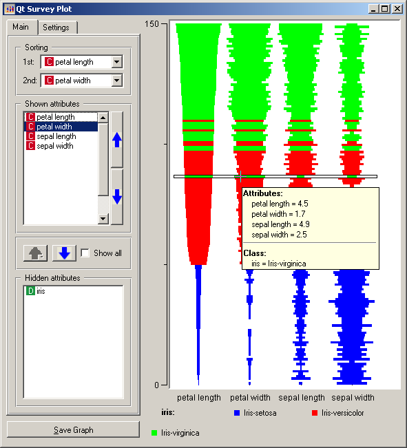
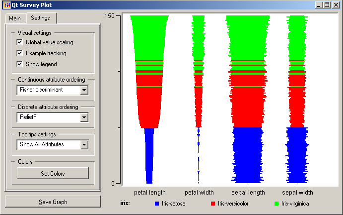

This is documentation for Orange 2.7. For the latest documentation, see Orange 3.
Survey Plot¶

Displays a Survey Plot.
Signals¶
- Inputs:
- Examples (ExampleTable)
Input data set.
- Attribute Selection List
List of attributes to be shown in the visualization.
- Outputs:
- Attribute Selection List
List of attributes used in the visualization.
Description¶
A survey plot is a simple multi-attribute visualization technique that can help to spot correlations between any two variables especially when the data is sorted according to a particular dimension. Each horizontal splice in a plot corresponds to a particular data instance. The data on a specific attribute is shown in a single column, where the length of the line corresponds to the dimensional value. When data includes a discrete or continuous class, the slices (data instances) are colored correspondingly.
Implementation in Orange supports sorting by two selected attributes (Sorting). The attributes shown in the plot are listed in Shown attributes box, all other appear in the list of Hidden attributes.
Below is a snapshot of survey plot widget for an Iris. Plot nicely shows that petal width and length and sepal length are correlated. It is also very clear that Iris-setosa can be classified based on petal length or width alone, while for the Iris versicolor and virginica there is some ambiguity with some potential outliers, one of which is highlighted in the snapshot.
Values of the attributes may be scaled independently, for each attribute at the time, or globally, using the information from all of the attributes This option is controlled through Global values scaling check box. Switching it on results in a plot shown below; notice that the leafs have smalled widths than lengths, and the ratio is bigger with petal leafs. With Example tracking on, mousing over the plot would bring a box around the row representing a single data instance, which would with Show legend display the information about the values of particular instance (just like in the snapshot aboce). The attributes appearing in the attribute list may be ordered according to selected criteria. Tooltips settings controls the amount of information displayed in the data instance balloon (essentially, one can change between including the information of only visualized attributes, or all the attributes in the data set).
